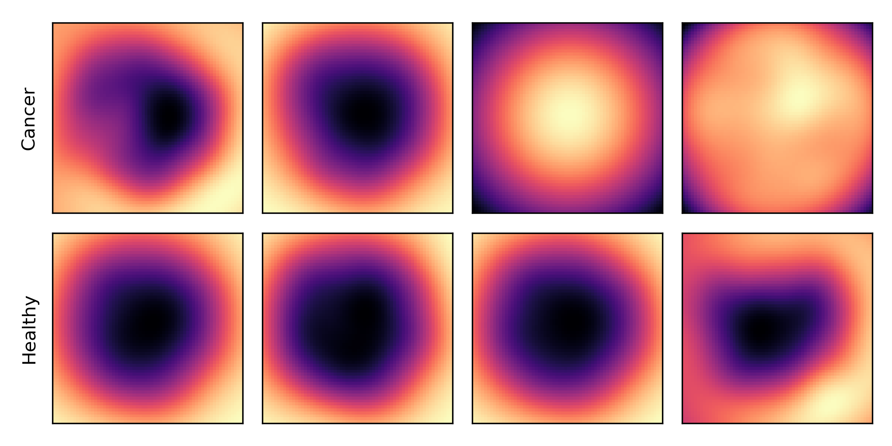
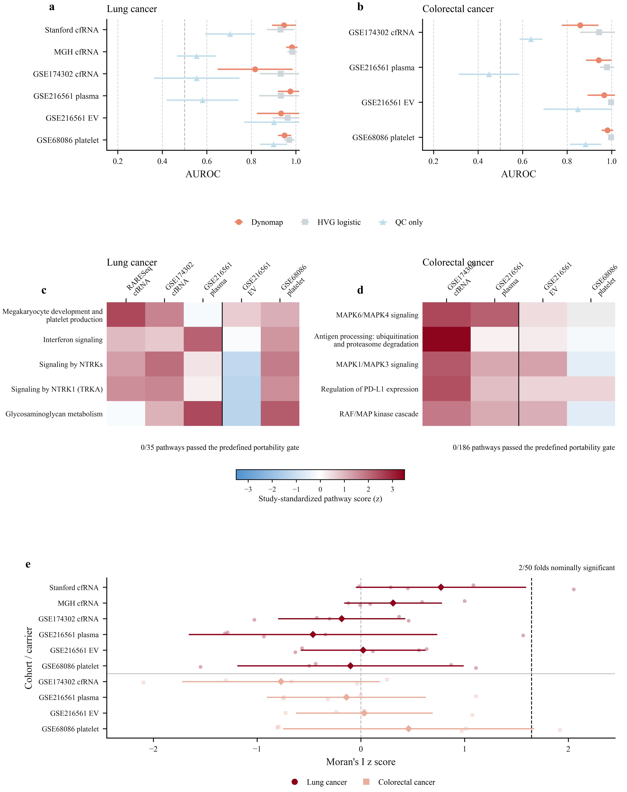

Gate predictive signal
A learned feature gate modulates each measurement while preserving its identity and direct contribution to the classifier.
Dynomap assigns every feature a learnable coordinate, renders each sample as a continuous two-dimensional map, and optimizes that spatial organization jointly with prediction.
Research beta · labelled CSV data · no protected health information

Ordinary tabular models receive features as an unordered vector. Dynomap makes feature organization an explicit, trainable part of the predictive model.
A learned feature gate modulates each measurement while preserving its identity and direct contribution to the classifier.
Every feature receives a continuous two-dimensional coordinate. Nearby measurements interact through differentiable Gaussian rendering.
A convolutional model reads the rendered map together with the gated feature vector, and both prediction and layout are optimized end to end.
We independently retrained Dynomap for ten donor-disjoint cancer-versus-control tasks spanning plasma cell-free RNA, extracellular-vesicle RNA, and tumor-educated platelet RNA.
Pooled out-of-fold AUROCs ranged from 0.835 to 0.982. Each cohort, carrier, disease contrast, feature-selection step, and cross-validation fold was evaluated independently.

Dynomap retains an explicit feature topology. Attribution can therefore be examined at the feature level and in the spatial neighborhoods formed during training.
Explore every selected feature by coordinate, attribution magnitude, and class-specific direction.
The paper uses Integrated Gradients; the web analysis also provides a Gradient SHAP approximation for representative validation samples.
Feature selection and standardization are fitted within each training fold, with group-disjoint splitting when donor IDs are supplied.
The private beta accepts CSV files in which rows are samples and columns are numeric features. Choose the outcome column and, if applicable, a donor or subject column.
Open the analysis workspace →Cross-validation estimates performance within the uploaded dataset. It does not establish transportability to another institution, assay, population, or clinical setting.
Feature attribution describes the fitted model and does not establish biological causality. Do not upload protected health information or direct identifiers.